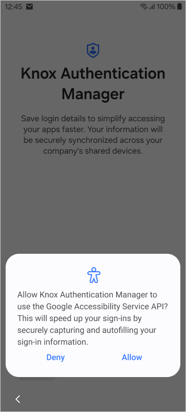

Get started as a user
Last updated July 30th, 2025
The following tutorial is intended for end users and guides you through the basics of setting up a Knox Authentication Manager account.
Step 1: Enroll in Knox Authentication Manager
The first thing you’ll need to do as an end-user is enroll in Knox Authentication Manager. Your enrollment workflow will vary depending on how your IT admin configured the app sign-in policy.
Enroll with Face and/or PIN authentication
To enroll in Knox Authentication Manager with Face, PIN, or both sign in methods:
-
Unlock your device and launch Knox Authentication Manager, then tap Sign in or enroll. Knox Authentication Manager should automatically launch. If it doesn’t, open the app from your home screen and tap Sign in or enroll.
If you’re enrolling with Face authentication and if this is your first time launching Knox Authentication Manager on a device, you’ll need to grant permissions for the app to send notifications and access your camera. These permissions are required in order capture your face during enrollment.
-
Enter your username in the Username field, then tap Next.
-
On the following screens, sign in with your enterprise credentials.
- For Omnissa, use your Omnissa enterprise credentials.
- For SOTI and Knox Manage, use your Microsoft Entra ID credentials.
-
Next, you’ll need to consent for Knox Authentication Manager to capture and store your biometric data in order to use Face authentication. Review the consent notification, tap the radial button, then tap Next.
If you tap Next without consenting to the collection of biometric data, you won’t be able to sign in with Face or PIN authentication. You’ll be forced to enroll with a Manual authentication method instead.
-
On the following screen, you should see a pop up asking you to allow the use of Google’s Accessibility Service. Tap Allow to continue with the enrollment.

-
Next, proceed through the prompts to register your PIN and face sign-in credentials.
- If you’re enrolling with a PIN only authentication method, you’ll only need to create a PIN.
- If you’re enrolling with both PIN+Face authentication, you’ll need to create a PIN, then scan your face.
Enroll with Manual authentication
To register a user account manually (without PIN or Face authentication):
- Unlock your device and launch Knox Authentication Manager.
- Enter your enterprise username in the Username field, then tap Next.
- On the following screens, continue signing in with your enterprise credentials.
- For Omnissa, use your Omnissa enterprise credentials.
- For SOTI and Knox Manage, use your Microsoft Entra ID credentials.
- On the following screen, you should see a pop-up asking you to allow the use of Google’s Accessibility Service. Tap Allow to continue enrollment.
Step 2: Sign in and out of Knox Authentication Manager
Once you enroll in Knox Authentication Manager, you’re signed into the device automatically. However, each time you sign out or pick up a different shared device at the start of a new workshift, you’ll need to sign back into Knox Authentication Manager on the new device to access your profile.
To sign in to Knox Authentication Manager:
-
Unlock your device and launch Knox Authentication Manager.
-
Enter your enterprise username in the Username field, then tap Next.
-
On the following screens, sign in using the authentication method you enrolled with.
- If you enrolled with PIN only, enter your PIN.
- If you enrolled with PIN+Face, enter your PIN, then scan your face.
- If you enrolled with Manual authentication, enter your enterprise password.
Entering your PIN incorrectly too many times will timeout your account for a short time. Timeout duration increases with subsequent failed logins. However, this only applies to the account that failed authentication; other accounts can sign in to the device without restrictions.
Sign out
To sign out of Knox Authentication Manager and manually end the shared-device session:
-
For Omnissa Workspace ONE — End your session by signing out of the UEM launcher. Your admin may have configured the launcher to sign you out automatically.
-
For SOTI and Knox Manage — Open the Knox Authentication Manager app and tap Sign out on the home screen, or pull down the notification drawer on your device and tap the Knox Authentication Manager notification to sign out. Your admin may have configured Knox Authentication Manager to end your session automatically if you’ve been inactive for too long, or if you plug in your device to a power source.
When you’re finished with a device, you should always sign out manually to ensure it can sync with other devices once on charge, regardless of how your admin configured Knox Authentication Manager.
Sign out with power button
If your IT admin configured your device to lock after pressing the power button, Knox Authentication Manager signs out after you lock your device with the power button. If you press the power button to unlock the device, you’ll have to sign into Knox Authentication Manager once again.
Exit sign in screen
To exit the sign-in screen and access the Knox Authentication Manager home screen or any other apps on the device, tap the logo six times, then enter the app PIN number set by your IT admin. Once the sign-in screen exits, you can tap the device’s Home button to exit the app completely and return to the device’s home screen.
On this page
Is this page helpful?